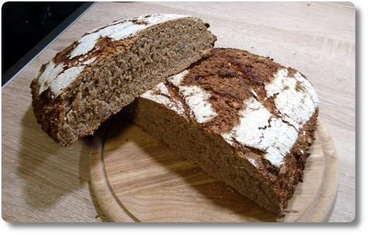
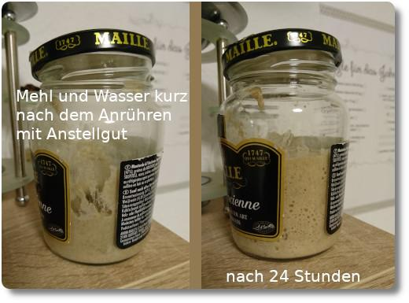

Sauerteig-Brot
Vor etwa einem halben Jahr bin ich unter die Sauerteig-Brot-Bäcker gegangen. Angefangen hat alles mit einem Gläschen Roggenmehl-Anstellgut von einer Kollegin...

Erfahrung mit Sauerteig hatte ich gar keine, aber wollte es unbedingt einmal ausprobieren. Daher lieh mir die Kollegin noch ein Sauerteig-Brotbackbuch vom Autor von Pötzblog und gab mir ein paar Tipps auf den Weg. Sie erzählte was von der "Finger-Probe", von Brotteig "falten", von Anstellgut "füttern" und einigen anderen Dingen. Okayyy. Klang irgendwie kompliziert.
Die Rezepte und Tipps im Backbuch haben mich zun√§chst eher ratlos zur√ºckgelassen. Ich bekam sogar etwas "Angst" davor, etwas falsch zu machen, weil mir die genauen Gramm-Angaben der Zutaten sagten, dass man penibel genau auf die richtige Menge von Salz, Wasser und Mehl und das richtige Verh√§ltnis der Mehlsorten zu achten hat. Ansonsten wird sicher etwas schief gehen! üò±
Tatsächlich war es aber etwas anderes, was mich und meine Frau anfangs fertig gemacht hat: das Kneten des Teigs. Was für eine Sauerei! Und die quälende Frage: muss das so aussehen?
Ein Beispiel: Unser erstes Brot aus dem Backbuch sollte ein Nussbrot werden. Wir haben den Teig genau nach den Mengen-Angaben im Rezept zubereitet. Statt 1050er Roggenmehl nahmen wir aber Vollkorn-Roggenmehl - das Brot sollte schließlich besonders gesund werden! ☺ Doch leider wurde der Teig beim Kneten mit der Hand einfach nicht richtig... Er klebte wie... Ach, viel schlimmer!!! Das gesamte Teig-Konstrukt saugte sich an den Händen meiner Frau fest, die sich opferte, den Teig zu kneten.
Irgendetwas musste also an diesem Rezept falsch sein und wir waren ziemlich frustriert. Im Buch gab es auch Bilder, die zeigten wie der Teig auszusehen hat, und das war ganz anders, als bei uns. Vielleicht war der Teig einfach zu feucht? Nachschütten von Mehl half zwar, aber nur ein paar Sekunden lang, dann fing das Kleben wieder von vorne an. Gnarf!
Irgendwie schafften wir es dann doch, einen halbwegs runden Brotleib zu formen, der in eine Auflaufform aus Glas kam. Darin musste der Teig jetzt nochmal gehen. Obwohl das Brot nach dem Backen herrlich duftete, ist es zu guter Letzt auch noch in der Backform festgebacken. Argh! So fest, dass wir das Brot st√ºckweise herausrei√üen mussten. üò¢ Immerhin: es schmeckte super!
Bei einem anderen Brot habe ich das Mehl zu ungleichmäßig in die Gehform geschüttet und der Teig blieb dadurch in der Form kleben. Buaaa. Unten sieht man das Ergebnis. Die Kruste ist extrem unregelmäßig. Aber: Das Brot hat trotzdem wieder gut geschmeckt!
Bei dem Nussbrot-Teig stellte sich später heraus, dass wir nicht das richtige Mehl verwendet haben! Statt 1050er Roggenmehl verwendeten wir Vollkornroggenmehl! Das klingt zwar gesünder, lässt es sich aber schwerer verarbeiten. Der Grund ist seine Grobkörnigkeit, die dafür sorgt, dass sich beim Kneten keine Klebestruktur (durch das Gluten) aufbauen kann. Bzw. wird es durch die Körner gleich wieder zerrissen. Dies sagte mir zumindest meine Kollegin. Tatsächlich liest man auch im Netz, dass sich reine Vollkornteige nicht so gut verarbeiten lassen und auch nicht so gut aufgehen.
Drei Dinge haben wir daraufhin geändert:
- Vollkornmehl wird nur noch in kleineren Mengen zur Mehlmischung hinzugefügt.
- Wir haben uns eine Küchenmaschine gekauft, die das Kneten unheimlich erleichtert.
- Beim Gehen und beim Backen kommt nun immer eine ganz dünne Schicht Mehl in die Form, damit es nicht festklebt [*].
Die Küchenmaschine knetet den Teig jetzt für uns bis er richtig gut wird. Es ist schwer zu erklären, woran man erkennt, wann der Teig "gut" ist. Pi-mal-Daumen nach etwa 10-15 Minuten kneten, man sieht es dann schon. Danach muss man ihn nur noch aus der Rührschüssel holen (am besten mit einem Teigschaber) und einen Brotleib formen. Dies ist eigentlich auch nicht schwer, aber ich brauchte doch Übung dazu. Wieder mal hat Youtube wirklich tolle Anleitungen für das Formen parat. Danach kommt der Teig nochmal in eine Gehform und schließlich in den Ofen.
Wer sich jetzt noch fragt, was eigentlich dieses Anstellgut ist: Im Grunde ist es nichts anderes als Sauerteig (eine Mischung aus Milchsäure und Hefe-Bakterien, Mehl und Wasser), der auf seinen Einsatz wartet. Sauerteig wird zu Anstellgut, wenn die Bakterien einen Großteil des Mehls umgesetzt haben und keine neuen Bläschen mehr entstehen. Dieses Anstellgut kann man bis zu zehn Tage im Kühlschrank aufbewahren bevor die Bakterien langsam absterben. Also muss man es ab und zu mit neuem Mehl und Wasser füttern. Im Netz findet man mehr Infos dazu.
Ebenfalls auf YouTube gibt es ein sehr schönes und einfaches Rezept von Bea (unbedingt anschauen, wirklich hilfreich und das Brot ist sehr lecker!), welches dafür sorgt, dass man gleich beim Backen immer wieder neues Anstellgut für den nächsten Sauerteig erhält. Bei diesem Rezept kommt noch Hefe zum Brotteig dazu, welche den Teig noch ein bisschens tärker antreibt, bevor es zum Backen geht. Die Arbeitsschritte und das Ergebnis habe ich in Fotos dokumentiert:
Die Rezepte aus dem Backbuch meiner Kollegin verwenden ausschließlich Sauerteig, ohne Hefe. Einige dieser Rezepte sind jetzt auch von uns erprobt worden und ich bin schwer begeistert! Das Brot schmeckt intensiv und ist noch saftiger als bei der Variante mit Hefe und man benötigt noch nicht einmal die Küchenmaschine, sondern man muss den Teig nur falten. Und wie das fertige Brot duftet!!! Klasse.
Ach ja, und was ist jetzt dieses "Falten"? Im Prinzip ist das eine ganz besondere Art des Knetens. Damit die Milchsäurebakterien beim Gehen des Teigs an neues Mehl heran kommen und besser arbeiten können, zieht man die Ecken des Teigs mehrmals über den Teig herüber, so als ob man ein Blatt Papier übereinander faltet. Hier ein Beispiel-Video von Lutz Geißler, Autor vom Plötzblog. Durch das Falten wird der Teig quasi einmal umgekrempelt, ohne dass man sich die Hände richtig schmutzig, bzw. klebrig macht. Diese Falt-Methode verwende ich nur bei den Rezepten ohne Hefe. Ein guter Tipp ist, sich die Finger vor dem Anfassen des Teigs nass zu machen. Dann bleibt fast gar kein Teig an ihnen kleben.
Und jetzt überlasse ich das Nachbacken euch. Rezepte für Sauerteig-Brote gibt es im Netz im Überfluss. Ein extrem einfaches Rezept gibt es zum Beispiel hier, aber ich habe mich inzwischen auch an ein Möhren-Kartoffelbrot (Bild unten) herangetraut. Genial!

Aus Umweltschutzgründen möchte ich noch folgendes empfehlen:
- Im Handel gibt es ganz tolles wiederverwendbares Backpapier. Dieses verwenden wir zum Backen und es hat uns schon ganz viel normales Backpapier eingespart. Auch wenn es etwas teurer ist, es rentiert sich!
- Damit das Brot nicht zu dunkel wird soll man es vor dem Ende der Backzeit mit Alufolie abdecken. Wir machen das auch, aber ich verwende immer wieder dasselbe Stück Alufolie. Nach dem Backen ist es noch genauso sauber, wie vorher, und daher kommt es bei uns in einen Küchenschrank wo es nicht stört und wartet auf seinen nächsten Einsatz.
- Ich versuche, möglichst wenige Schüsseln bei der Teigvorbereitung zu benutzen. Den Sauerteig aus Beas Rezept setze ich direkt in der Rührschüssel der Küchenmaschine an. Das funktioniert genauso gut und spart eine Schüssel beim Abwasch.
| [*] | Wir verwenden übrigens keine Gehform aus Holz oder Plastik, wie man sie im Laden bekommt, sondern haben uns ein Baumwolltuch für die Küche gekauft. Dieses dient als Unterlage und kommt in eine ganz normale Brotbackform, die wir schon länger besaßen. Bevor der Teig dort rein gelegt wird, kommt eine dünne Schicht Mehl auf das Tuch. |